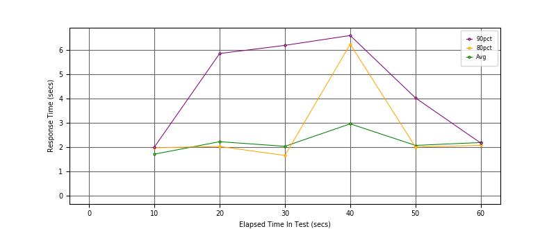
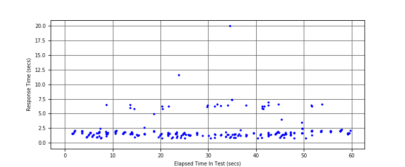
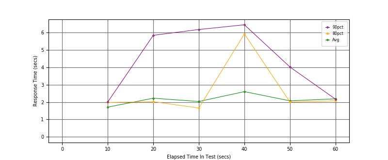
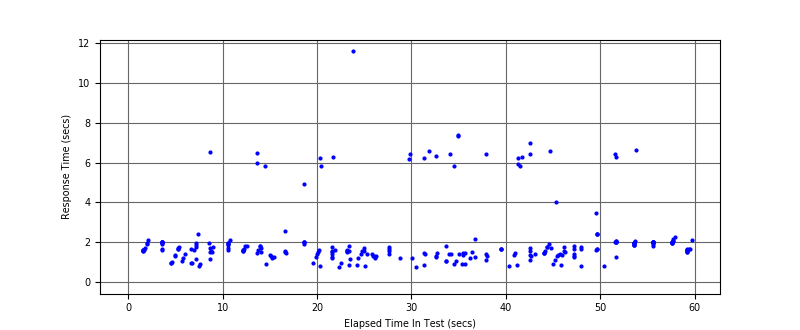
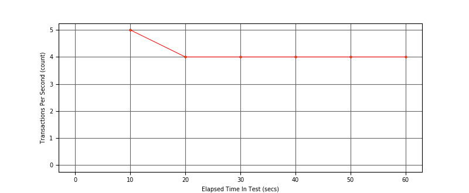

Performance Results Report
Summary
transactions: 284
errors: 1
run time: 60 secs
rampup: 0 secs
test start: 2018-05-20 16:37:00
test finish: 2018-05-20 16:37:58
time-series interval: 10 secs
workload configuration:
| group name | threads | script name |
|---|
| user_group-1 | 7 | regular_user.py |
| user_group-2 | 3 | intensive_user.py |
All Transactions
Transaction Response Summary (secs)
| count | min | avg | 80pct | 90pct | 95pct | max | stdev |
|---|
| 284 | 0.754 | 2.162 | 2.008 | 5.816 | 6.432 | 20.020 | 1.920 |
Interval Details (secs)
| interval | count | rate | min | avg | 80pct | 90pct | 95pct | max | stdev |
|---|
| 1 | 57 | 5.70 | 0.786 | 1.710 | 1.974 | 2.003 | 2.096 | 6.523 | 0.744 |
| 2 | 40 | 4.00 | 0.791 | 2.223 | 2.026 | 5.847 | 6.219 | 6.490 | 1.601 |
| 3 | 43 | 4.30 | 0.754 | 2.034 | 1.658 | 6.181 | 6.262 | 11.589 | 2.097 |
| 4 | 40 | 4.00 | 0.819 | 2.957 | 6.230 | 6.587 | 7.378 | 20.020 | 3.541 |
| 5 | 46 | 4.60 | 0.796 | 2.071 | 2.003 | 4.020 | 6.437 | 6.974 | 1.519 |
| 6 | 48 | 4.80 | 1.276 | 2.189 | 2.075 | 2.166 | 6.282 | 6.622 | 1.129 |
Graphs
Response Time: 10 sec time-series

Response Time: raw data (all points)

Throughput: 5 sec time-series

Custom Timer: Latency
Timer Summary (secs)
| count | min | avg | 80pct | 90pct | 95pct | max | stdev |
|---|
| 274 | 0.754 | 2.111 | 2.008 | 5.816 | 6.428 | 11.589 | 1.602 |
Interval Details (secs)
| interval | count | rate | min | avg | 80pct | 90pct | 95pct | max | stdev |
|---|
| 1 | 57 | 5.70 | 0.786 | 1.710 | 1.974 | 2.003 | 2.096 | 6.523 | 0.744 |
| 2 | 40 | 4.00 | 0.791 | 2.223 | 2.026 | 5.847 | 6.219 | 6.489 | 1.601 |
| 3 | 43 | 4.30 | 0.754 | 2.034 | 1.658 | 6.181 | 6.262 | 11.589 | 2.097 |
| 4 | 40 | 4.00 | 0.819 | 2.603 | 5.929 | 6.452 | 7.343 | 7.378 | 2.272 |
| 5 | 46 | 4.60 | 0.796 | 2.071 | 2.003 | 4.020 | 6.437 | 6.974 | 1.519 |
| 6 | 48 | 4.80 | 1.276 | 2.189 | 2.075 | 2.166 | 6.282 | 6.622 | 1.129 |
Graphs
Response Time: 10 sec time-series

Response Time: raw data (all points)

Throughput: 10 sec time-series
